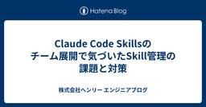

株式会社ヘンリー エンジニアブログ
https://dev.henry.jp/
株式会社ヘンリーのエンジニアが技術情報を発信します
フィード

Claude Code Skillsのチーム展開で気づいたSkill管理の課題と対策 84
84
株式会社ヘンリー エンジニアブログ
株式会社ヘンリーでソフトウェアエンジニアをしているwarabiです。ヘンリーでは以前から開発にClaude Codeを用いていましたが、最近はSkillの活用などでClaude Codeの性能をもっと引き出そうとする動きが活発になっており、ブログでの発信も増えてきています。Claude Code を活用した電子カルテの外部連携仕様書メンテナンス自動化の取り組み - 株式会社ヘンリー エンジニアブログ今回は私が以前に作成したSkillをチームの共有物として管理・展開する際に気付いたSkill管理の課題と対策について話そうと思います。以前作ったSkillの紹介起票されたIssueの中身を確認・追加調査をしたうえで実装からPR作成までを全自動で行うOrchestrator型のSkillです。（以降 dev Skillと表現）dev.henry.jpこのdev Skill作成は元々チームへの展開も前提として考えながら作成を進めていました。試行錯誤を経て組み立て終わったdev Skill。続いてチーム展開について考えるステップへと進む予定でしたが、ここに1つ問題がありました。チーム展開の引っかかりチーム展開をした以降はSkillのメンテナンスも私個人ではなくチームで行う想定でしたが、いざチームへの展開について考ると「このSkill、自分以外の人がメンテするの？」という親心のような気持ちが私の中に生まれていました。他の人からPRが来ることを想像すると少し抵抗を感じる。通常業務のコード修正とSkill修正で何が違うのか。この感覚を整理・言語化しないままチームに展開をすると無秩序な管理状態になるかもしれません。そこでチーム展開の作業は一旦手を止め、Skill管理について課題や見落としが無いかを考え直すことにしました。課題整理課題1: 変更内容の評価が難しい通常業務のコード修正であれば既存実装の設計や社内での知見があるため、ある程度正解と呼べるものが導きやすいです。そのため実装者とレビュアーの間で認識も揃えやすく、基本的にApproveまでは進めやすいと言えます。しかしSkillはまだ設計と言えるほど成熟したパターンが確立できてなく、皆手探りという状況です。指示はどれだけ長い/短い方が良いかの1点だけでもXで日々議論が起きています。そのためSkillやプロンプトについてはまだ正解とい
5日前

Claude Code を活用した電子カルテの外部連携仕様書メンテナンス自動化の取り組み
株式会社ヘンリー エンジニアブログ
この記事では、Claude CodeのSkill(Agent Skill)やCIを活用して、コードベースから外部連携の仕様書を自動生成・更新する仕組みを構築した取り組みを紹介します。はじめにこんにちは！ヘンリーで電子カルテ開発チームでエンジニアをしているわくわく(@wakwak3125 / @wakwakjp) です。最近社内でのAI活用が進んでいており、 https://dev.henry.jp/entry/claude-code-orchestrator のような便利なSkillのおかげで開発自体の速度がぐんぐん上がっています。一方で、まだまだ人の手で行われている部分が多いのも事実です。今回はその人力で行われていて、抜け漏れのチェックが非常にめんどくさい「仕様書」と呼ばれるもののメンテナンスを Claude Code, Skill, GitHub Actions を使い半自動化する仕組みをご紹介します。Henryという電子カルテにおける仕様書とはここで言う「仕様書」はHenryの内部の仕様を解説したものではありません。ではなにかというと、外部のシステムとの連携に関する仕様書です。電子カルテという製品は様々な周辺のソフトウェアと接続・連携して病院業務の中核を担います。一例としては、臨床検査システムや調剤システム、予約・問診システム、自動精算機などがあります。連携がどのように実施されてるかに興味がある人は次の記事を読むと楽しめると思います。https://dev.henry.jp/entry/2024/12/14/163949https://note.com/henry_app/n/n29691b917b41仕様書か管理の難しさ・煩雑さ外部連携のインターフェイス仕様や連携を必要とされるお客様環境への導入プロセスにおける設定に必要なデータなどはHenryの機能追加などで変わっていきます。冒頭でも書きましたが開発プロセスへのAI活用のおかげでこれまででは考えられないような速度感の開発になりつつある中で仕様書と実装に齟齬は無いか仕様書に更新が必要な実装なのか仕様書に変更がある場合の記載作業と記載内容のレビュー仕様書の公開作業といった作業に加えて、連携種類が増えた際の仕様書の追加がされた際のフォーマット・テイストの統一など品質面の調整の工数もかかります。そこで、変更検知、仕
14日前
Jagu'e'r データ利活用分科会 #32 Meetup 「複数分科会コラボ企画 ― 各業界のデータ利活用事例スペシャル」で登壇しました
株式会社ヘンリー エンジニアブログ
こんにちは、ヘンリーでPMをしているdam(@aki_hiro0038)です。2026年2月6日、Google Cloud公式ユーザーコミュニティ「Jagu'e'r」のデータ利活用分科会に弊社も参加し、登壇しました。jaguer.connpass.comきっかけは私が個人的に所属しているデータ分析系のテックコミュニティで「最近噂になっているヘンリーさん、よかったらJagu'e'rで登壇してみませんか」とお声掛けしてもらったことでした。ちょうど社内でもデータ分析に力を入れようという動きがあり、組織拡大の中でデータ分析業務や基盤構築を専任で担うメンバーも採用できたタイミングでした。そこで、ぜひ直近の活動内容を紹介させてほしいと登壇が決まりました。勉強会の雰囲気今回は複数分科会コラボ企画ということで、エネルギー分科会から大阪ガスさん、ENEXIA合同会社さん、街づくり分科会から三菱地所株式会社さんが登壇されていました。（ちなみにヘンリーはヘルスケア分科会としての登壇でした。）コミュニティの方針として、登壇内容は基本コミュニティ内に閉じる考えのため多くは書けませんが、再エネ業界の課題にデータ分析でどう立ち向かっているかというお話や、街（オフィス・商業施設・居住施設など）の価値をどう捉えて向上させていくかなど、どれも興味深いお話ばかりでした。詳細にご興味のある方は、下記の新規会員登録フォームからぜひコミュニティにご参加ください。jaguer.jpまた、運営メンバーの高須賀さんより、イベントレポートも公開されておりますので、こちらもご確認ください。note.com弊社の登壇内容弊社からは「カオスな病院のデータにどう立ち向かうか？」というタイトルで、データ分析基盤チームで活躍する吉村が登壇しました。吉村は異業界から入社したばかりのメンバーですが、退院サマリーなどの書類をデータから自動作成する取り組みや、病院経営を支援するダッシュボードの提案など、データ活用の可能性が医療業界には多くあると感じている点についてお話ししました。また、それらを実現するために、AI活用も視野に入れた可用性の高いデータ基盤の構築を目指しているが、過去の経緯からデータマートがカオス化してしまっている課題に対して、dbtのYAMLファイルのカラム定義をAIに生成させたり、テーブル構造図をAIに描かせたりと、AI
25日前
Claude Codeで開発を全自動化する - Orchestrator型Skillの設計と実践
株式会社ヘンリー エンジニアブログ
株式会社ヘンリーでソフトウェアエンジニアをしているwarabiです。ヘンリーは医療業界向けのプロダクトを開発しており、開発メンバーにも難解なドメイン知識が求められます。そのため普段からドメインの理解や深堀りに時間をかけたいところですが、実際は開発業務も進めなければならないため、時間の使い方に悩んでいました。この課題に向き合うために、普段開発で使っているClaude Code（Anthropic社が提供するCLIベースのAIコーディングアシスタント）をもっとうまく活用し、実装にかける時間を減らして学習に充てる時間を増やせないかと考えました。それまでのClaudeCodeの使い方と課題それまでの私のClaude Codeの使い方は、一言で表すとAIとのペアプロです。AIによるコードの変更をリアルタイムに確認しながらその場で質問もできるため、設計やサービスの理解には役立ちます。ただ、このやり方だと人間がAIのそばを離れられません。会話のラリーを続けるために生成されたコードをそのつど読む必要があり、別の作業に移りづらい状態でした。理想の動作を考える使い方を切り替えるにあたり、まずは普段の業務フローを整理し、自動化できそうな部分を洗い出しました。開発フローを3フェーズ・7ステップに分解したところ、それまでペアプロで行っていた計画・実装の2ステップに加え、情報収集・PR作成を含む計4ステップを完全に自動化できる可能性があると考えました。As-Is: 黄色がAIとのペアプロTo-Be: 緑色をAIで完全自動化なるべく完走させるために自動化したい作業がはっきりしたので、次は「どうやってAIに任せるか」を考えます。ここで活用したのがClaude Code Skillsです。code.claude.comSkillsは、Claude Codeに対して特定のタスクの進め方を手順として定義できる仕組みです。先ほど挙げた「ペアプロから離れられない」という課題の根本は、Claude Codeに一連の作業を任せきれないことにあります。プロジェクトの前提知識はCLAUDE.md（Claude Codeのプロジェクト設定ファイル）に書けますが、CLAUDE.mdは会話の開始時に常に読み込まれるため、ワークフローのような長い手順まで書くとコンテキストウィンドウを圧迫します。コンテキストが長くなるほど指
1ヶ月前
SRE Kaigi 2026 で推しのインフラツールについて聞いてみた
株式会社ヘンリー エンジニアブログ
株式会社ヘンリーで SRE をやっている id:nabeop です。ヘンリーでは SRE Kaigi 2026 でゴールドスポンサーとしてスポンサーブースを出していました。当日のヘンリーブースの様子当日は朝からブースにたくさんの方に足を運んでいただき、いろいろなお話ができてとても刺激的な1日を過ごせました。また、SRE Kaigi 2026 の運営スタッフの皆様、素晴らしいカンファレンスをありがとうございました。今回のヘンリーブースでは会話のきっかけとして、「あなたの推しインフラツールを教えてください!!」というアンケートをしてみました。実はこのアンケートは会期前に社内でも実施していたので、今回は会場での結果と社内での結果をみていきたいと思います。推しのオブザーバビリティツールを教えてください最初に SRE に欠かせないツールとしてオブザーバビリティツールについて聞いてみました。会場でのアンケート結果会場ではメジャーどころの Datadog が 54.7% と圧倒的に多く、ついで、New Relic や Grafana Labs が続くという感じでした。対して社内では Honeycomb が一番支持されていて、New Relic と Mackerel が続いているという感じでした。世間では Datadog が結構支持されると予想はしていましたが、ここまで多くの支持を集めるとは予想していませんでした。弊社では Datadog も使っているけど、Honeycomb の支持が強かったのは、弊社では分散トレーシングの分析に Honeycomb を活用しており、その便利さから支持されたのだと思います。推しの負荷計測ツールを教えてください続いて負荷計測ツールについて聞いてみました。会場でのアンケート結果会場では k6 が 47.9% と一番多く、ついで、Aapche JMeter が 26% の支持を獲得していました。社内でも k6 が一番支持されていて、ここは社内と会場での差はあまりないようでした。自分も負荷シナリオを JavaScript で記述できて、かつ、環境のセットアップが簡単にできることなどから負荷計測ツールは k6 を愛用しています。推しの IaC ツールを教えてください続いて IaC ツールについても聞いてみました。会場でのアンケート結果会場では Terrafo
1ヶ月前
メドレー、カミナシの皆さんとヘンリーで現場PM勉強会を開催しました
株式会社ヘンリー エンジニアブログ
こんにちは、ヘンリーでPMをしているdam(@aki_hiro0038)です。2026/1/20にメドレーさんの六本木オフィスをお借りして、3社合同のPM勉強会を開催しました。本イベントは社外告知しておらず、クローズドな開催となります。きっかけは昨年のpmconf 2025の懇親会にて、私が「勉強会やりませんか！」と声を掛けたら、即答で「やりましょう！」とメドレーの田所さん(@ytadokorokoro)、カミナシの吉岡さん(@oriori440)がお返事くださったことでした。3社ともVertical SaaSのプロダクト開発を行っており、顧客現場に深く入り込むことを重視する文化を持ち合わせていることを知っていたため、「いつかクローズドに深く話し合ってみたいな〜」と考えていたところ、たまたま3社ともで知り合う切っ掛けができ、チャンスと思って提案しました。そういう思い切りから始まった勉強会ですが、お二人の力をお借りしながら勉強会内容の企画し、無事開催に至りました。改めて、メドレーの田所さん、カミナシの吉岡さんには感謝しかありません。さらにメドレーのDevrel担当重田さんの粋な計らいから軽食とお飲み物もご提供いただき、大変ありがとうございました！！勉強会内容冒頭に開催の背景とお互いの事業紹介、あと顧客現場に入り込む上での悩みを共有した後、3社合同のOSTを開催しました。OST（Open Space Technology）とは、話したい人が、話したいことを、話したい人と、話したいときに話せるようにするための方法論です。簡単に言うと仕組み化された雑談と理解いただけたら良いと思います。昨今、さまざまなカンファレンスでOSTが開催されており、参加者自身が話したいと思っていることを、同様に興味を持っている他の参加者と話し合える場作りがされています。ヘンリーでは開発スプリントの振り返りやリモートーワーク下であえて雑談を発生させる仕組みとしてOSTを取り入れています。OSTの冒頭では、まず参加者それぞれが「話したいテーマ」を出し合うところから始まります。「顧客の本音を引き出す方法」や「現場でアナタに起きた奇跡」といった、実践的なスキルやリアルな経験談にフォーカスしたテーマがある一方で、「究極、そんなに現場に行かなくていいんじゃない？」「紙に勝てない領域は本当にあるのか？」といった、
2ヶ月前
RSGT2026にゴールドスポンサーとして初参加しました
株式会社ヘンリー エンジニアブログ
はじめまして、株式会社ヘンリーでPdM・DE（ドメインエキスパート）・スクラムマスターを担当しているowataです。2026年1月に開催された RSGT2026 に、株式会社ヘンリーとして ゴールドスポンサー＋ブース展示＋セッション登壇 という形で参加しました。今回弊社は、PdM・DE・エンジニアと幅広い職種で参加しました。本記事では、なぜこのブース展示を企画したのか実際にどんな体験を提供したのか参加・登壇して何を得たのかを振り返ります。なぜ「体験型ブース」をやろうと思ったのか今回のブース展示のコンセプトは、かなりシンプルです。Help!! ― このプロジェクトの課題、どうやって解決しますか？ ―RSGTは、スクラムやアジャイルに関心の高い人が集まるイベントです。一方で、ブース展示はどうしても「説明を聞く場」になりがちです。そこで今回は、立ち寄った1分でも楽しめる興味があれば、いくらでも深掘りできる毎日来ても、変化を楽しめるそんな「関与の深さを来場者が選べる体験」を作ることを目標にしました。ブースの設定：架空プロジェクト × 開発ライフサイクルブースでは、架空のプロジェクトチームが、開発ライフサイクルに沿って開発しているという設定を置きました。ディスカバリー中開発・実装中リリース後それぞれのフェーズで、「一度は聞いたことがある」「今まさに悩んでいる」そんな リアルな悩み をボードに配置しました。例を挙げると、仕様が固めきれず、合意できないユーザーごとに要望が真逆で判断に迷う「いつ出せるの？」にどう誠実に答えるかリリース後、どこまで改善したら“完了”と言えるのか価値が出ているかをどう測るのかなどです。来場者にやってもらったことブースで来場者ができることは、大きく3つです。悩みに対して「いつ・何をするか」を付箋で提案するそのメンバーに声をかけるなら、どんな言葉をかけるかを書く自分自身のプロジェクトの悩みを、空の悩みボードに貼る答えを書く付箋の色を悩みごとに揃えることで、「この悩みには、どんな打ち手が集まっているか」が自然と可視化されていきました。想定以上に付箋が集まり、途中で課題シートが足りなくなるほどでした。ご協力頂いた皆様ありがとうございました！1日目に集まった付箋2日目に集まった付箋ブースで起きていたこと（実感ベース）実際にブースに立ってみて感じたのは、自然とスク
2ヶ月前
株式会社ヘンリー Advent Calendar 2025 の感想
株式会社ヘンリー エンジニアブログ
株式会社ヘンリーで SRE をしつつ、技術広報的なこともしている id:nabeop です。2025年も会社でアドベントカレンダーを企画しました。2024年までは1トラックでの開催でしたが、2025年は2トラックでの開催をして多くのメンバーに参加してもらえるようにしました。12/112/212/312/412/512/612/712/812/912/1012/1112/1212/1312/1412/1512/1612/1712/1812/1912/2012/2112/2212/2312/2412/25最後に12/1おそらくどの企業もはまっているパターンを言語化していて、それを打開しようする意思表明をしていてよかった。(杉本)あがたくんの発見が素直に出ていて素敵！(林)VPoPのagatanの気合いの入ったブログ。Podcastも合わせて聞いてもらえるとヘンリーの開発についてよりイメージが湧くと思うのでこちらもぜひ！(へれねー)大きな組織や複雑なシステムになるにつれ、意識してないとこの事業戦略と技術戦略が乖離していく慣性があるイメージが個人的にあったのが言語化されて面白かったです！(ryugen)転職・ヘンリーに決めた理由の説得力が強く、入社後すぐスタートダッシュを切って活躍されているのも納得すぎます。(菅井)改めてアウトプット文化の大事さ、ヘンリーの魅力を伝える為の1つだと確信しました。(村木)11月に入ったメンバーの入社エントリー。積極的な技術広報が入社の決め手のひとつになったという内容は社内でも話題になった。(へれねー)12/2パブリッククラウドtoパブリッククラウド移行は、他の企業が諦めるような取り組みなので、これをきっかけに興味を持ってくれるとうれしい。(杉本)社内外に改めてインフラのストーリーをきちんと歴史的に説明できてとても素敵だなと思いました。(林)GCPからAWSの移行について、経緯や考えがわかりやすくまとまっている。意外とここまで説明しているケースは少ない気がするので、他社で参考にしてもらえたら嬉しい。(へれねー)GCPからAWS移行を柔軟に事業特性を踏まえてやっていくのはあまり効いたことがないのですごい！(ryugen)自分もそろそろ体力の衰えを感じるお年頃になってきたので、何かしらの運動はしたいけどすぐにやめちゃっていました。モチベーションの維
2ヶ月前
入社半年、はじめての医療ドメイン理解を振り返る
株式会社ヘンリー エンジニアブログ
【これはHenryアドベントカレンダー 2025 シリーズ 1 における22日目の投稿です。昨日の記事は俺たちの成長は止まらない｜Sugimura Masashiでした。】はじめまして、6月にヘンリーに入社したエンジニアのichienです。初めてブログを書くので、半年遅れの入社エントリーになります。私はこれまで地図や会計プロダクトでの経験を経て、今回、新しく医療ドメインにチャレンジしています。開発では主に医事（医療事務）会計領域を担当しています。入社して半年、過去の学習経験を活かしながら医療ドメインのキャッチアップに取り組んでいますが、自分なりに理解するまでに時間がかかることが多く、試行錯誤しながら取り組んでいます。前職ではマネジメント多めのEMロールだった所から、今のヘンリーではエンジニアにフルコミットしており、利用技術周りのキャッチアップにも取り組んでいます。ライフステージの変化と共に利用時間に制約が増えていく中で、「いかに学習の質を高め、最速で学びを積み上げられるか」という戦略の大切さを感じている所です。この半年でドメイン理解のために取り組んだことを振り返り、今後のアクションについて考えてみます。なぜ医療ドメインにチャレンジしたのか？子どもが成長過程で社会福祉機関による公共の支援や医療サポートを受ける機会がありました。私にとって初めての経験で、地域で支え合う仕組みがあることにありがたいと思うと同時に、一人のエンジニアとしてこのような公共の仕組みに何か貢献できないだろうかと考え始めたことがきっかけでした。そんな中、理想駆動で社会課題に真正面から立ち向かっているヘンリーの考え方に共感し、飛び込んでみました。巨大で複雑なものは難しいけど面白い当初は「どんなドメインでも、学んでいけばなんとかなるだろう」と楽観的に考えてました。しかし、国民皆保険制度に基づく医療費請求の仕組み、国が定める医療費の根幹を貫く診療報酬制度、外来診療/入院を含めた病院業務の複雑さを一歩一歩理解するにつれて、奥深すぎて一筋縄ではいかないなと考え直しました。未知で”わからなかった”ことを学び、解像度を上げていくことは面白いです。"わかる”状態が増えると、自身の成長を実感できて、楽しいのです。更にそれが難しいことほど、わかった時の成長実感が大きく、より面白くなっていきます。こんな気持ちで複雑な領域に
3ヶ月前
みんなが考える難しさはどこにある? アーキテクチャ Conference 2025 のアンケート結果発表
株式会社ヘンリー エンジニアブログ
ヘンリーで SRE をやっている id:nabeop です。この記事は株式会社ヘンリー - Qiita Advent Calendar 2025 シリーズ2の10日目の記事です。ヘンリーは2025年11月20日と21日に開催されたアーキテクチャ Conference 2025 で Gold スポンサーとしてスポンサーブースを出展しました。ヘンリーブースの様子会期中はたくさんの方にヘンリーブースに足を運んでいただき、ありがとうございました。ブースでは「アーキテクチャ」をキーワードに2つのアンケートを実施していました。サービスは分ける?まとめる?どの業界が一番設計しにくい?今回はそれぞれのアンケート結果をみながら、会期中の様子などについてまとめます。サービスは分ける?まとめる?サービスのアーキテクチャを考えるにあたり、以前は「モノリス」と「マイクロサービス」の2択でしたが、ここ数年で「モジュラーモノリス」という考え方も一般的になってきました。ただ、これらのアーキテクチャは正解が存在せず、組織のフェーズやサービスの性質などで最適解が変わるため、どのアーキテクチャを選択するかは難しい判断となります。そこで会場では「サービスは分ける?まとめる?」という質問を投げかけ、アンケートボードに投票してもらいました。投票してもらった結果は以下です。サービスは分ける?まとめる? アンケート結果最終的にはモジュラーモノリスがダントツで表を集めましたが、モノリスとマイクロサービスもそれぞれ一定数の票を集めました。モジュラーモノリスはモノリスとマイクロサービスの中間的なアーキテクチャであり、両者の良いところを取り入れた設計が可能です。そのため、多くの参加者がこのアーキテクチャに魅力を感じていることがわかります。対して、モノリスやマイクロサービスにもそれぞれの利点があり、特定のユースケースや組織のニーズに適している場合もあるということがよくわかる結果になったかなと思います。弊社では最初はモノリスを志向して設計がされましたが、ドメインの理解が深まるにつれ、モジュラーモノリスに徐々に移行しています。会場ではいろんな方とそれぞれのフェーズでのアーキテクチャ選択についてお話しすることができ、とても有意義な時間となりました。どの業界が一番設計しにくい?ヘンリーはレセコン一体型の電子カルテを開発しており、医
3ヶ月前
Server-Side Kotlin Night 2025を開催しました！
株式会社ヘンリー エンジニアブログ
2025年11月25日、ヘンリーで「Server-Side Kotlin Night 2025」をKotlin Fest 2025の非公式アフターイベントとして開催しました！henry.connpass.com2024年に続き2回目の開催となります。セッション内容AmperでKotlinのエコシステムを簡単キャッチアップ登壇者:一円 真治 (ichien)氏 株式会社ヘンリー speakerdeck.comKotlinConf 2025のOpening keynoteでも扱われ、聞いたことはある人が多くいるもののまだあまり情報の出回っていないAmperについてのセッション。SNS上での反応Amper、とっつきやすそうな yaml ファイルの形式だamper showでモジュール構成とか見れるのおもろい、良さそう開発環境の簡易化が開発ハードルが低くなるので、エコシステムが広まって欲しいサーバーサイド Kotlin を社内で普及させてみた登壇者:川田 裕貴氏 株式会社マネーフォワードwww.slideshare.netマネーフォワードさんでサーバーサイドKotlinを普及させた経験を元に、技術選定の難しさや実際に組織内から上がってきた意見などが紹介されています。SNS上での反応Kotlinの技術選択めっちゃむずかしいのわかる...coroutinesを活用するかどうか問題も、確かにexposedも気になっているけどjOOQも良いjOOQ悪くないけど、Pure Kotlinの夢はいつも見るWhy Kotlin? 電子カルテを Kotlin で開発する理由登壇者:縣 直道氏 株式会社ヘンリー speakerdeck.comヘンリーでなぜKotlinを使用しているのか、その背景にある医療ドメインの難しさや、技術選定の理由について解説しています。SNS上での反応病院ドメイン複雑そうだ…Pure Kotlinの世界線に賭けた技術選定だヘンリーさんがきっとGraphQL Kotlinの後継作ってくれるんだろうなKotlinでミニマルなResult実装による関数型エラーハンドリング登壇者:lagénorhynque / カマイルカ氏 株式会社スマートラウンドwww.docswell.com独自のResult型を実装し、エラーハンドリングを改善した事例を紹介しています。SNS上での反応
3ヶ月前
わけのわからないバグに遭遇したときの生き抜き方
株式会社ヘンリー エンジニアブログ
株式会社ヘンリーで医療会計部のエンジニアの一條（GitHub: @rerost , X: @hazumirr）です。これはHenryアドベントカレンダー 2025 シリーズ 1 における7日目の投稿です。昨日の記事は スタートアップで経営を執行から引き剥がした10ヶ月間 でした。僕は今まで、複雑な診療報酬をちょっとずつ理解しながらの開発インシデント時のコマンダーロジックが複雑かつ機械学習を入れた検索システムの構築（前職）といったことをしていました。なので、わけのわからないバグに遭遇する機会は多い方だったと思います。この経験の中で僕が実践していたことについて書きます。目次目次バグ自体の分類緊急度バグの発生源の種別対応の流れ再現する原因を特定する修正する最後にバグ自体の分類割とここが肝だと思っていて、バグ自体が分類できたら対応の9割は終わったと言っても過言ではないと思います。僕は、発生源・影響度の二軸で考えています。緊急度緊急度はバグ対応中にかなり早くに明確にしておくと対応がスムーズです。リリース済み機能でユーザーの行動がブロックされることがあり、即座に対応しなければいけないリリース済み機能でユーザーでの回避策などがあるが、早めに直さないとユーザーに手間を取らせてしまう未リリースなどでユーザーに影響しない1なら、まずは回避策を練るか一次対応するなどで根本対応より先にでること。対応へのリードタイムを減らすためにも、人を集めましょう。2なら、落ち着いて原因を探りつつ、ユーザーへの案内などを速やかに行いましょう。3なら、ゆっくり調べましょう。といった具合です。バグの発生源の種別発生源は多くの場合、以下のどれかに分類されるかと思います。実装のみからくるもの。例: 外部ライブラリの使い方やアップグレードなど現状動いているものと、以下のどれかとのズレ過去の仕様関連するルールや法律など例: 診療報酬制度2つ目の部分の説明をしていくと、まず具体例としては以下があります。発生源 例過去の仕様 昨日まで検索でヒットしていたものがヒットしなくなった。 先月まで自動で入力されていた部分が入力されなくなった。関連するルールや法律など XXを算定すると、自動でYYも算定されるはずだが、算定されない。このどちらかが、実装とズレていることでバグは発生します。実装とどれかが異なるか更にたどると、実装者が
3ヶ月前
スタートアップで経営を執行から引き剥がした10ヶ月間
株式会社ヘンリー エンジニアブログ
株式会社ヘンリーでVPoEを務めている戸田（id:eller）と申します。これはHenryアドベントカレンダー 2025 シリーズ 1における6日目の投稿です。昨日の記事は kobayang の デザインシステムライブラリを実装するためのテクニック でした。本日は弊社で経営と執行を分離するためにどう権限委譲を進めてきたかをご紹介したいと思います。スタートアップのVPoEって何をやってるんだろう、という疑問にお答えできれば幸いです。目次目次解きたい課題何がブロッカーだったのか課題を解く10ヶ月1月: 方針の明確化と障害の分析を行い、戦略を立てる3月: 医事チームを分割して権限委譲できる大きさにする7月: 電子カルテチームを分割して権限委譲できる大きさにする9月: 逆瀬川の部長兼務が終了する11月: 縣が製品部門代表としてお客様にご挨拶をする振り返って、VPoEは何をしたのか、その存在意義はなにか株式会社ヘンリーはエンジニアリング組織の理想を追求していきます解きたい課題この6月に「ヘンリーで初めて製品部室長合宿をしました」で触れたように、弊社では長らくCEOである逆瀬川がエンジニアリングチームのマネジメントを兼務していました。2024年末に組織再編を行い部長・室長・本部長などのポジションが明確になりましたが、その後も逆瀬川が部長を兼務していた状態でした。図1 電子カルテや医事会計などの開発を逆瀬川が直接見ていたこの状態には多くの利点があります。逆瀬川はお客様のペインも業界の課題も頭に入っていますし、サービスを黎明期から見てきているので深く理解しています。またヘンリーを起業してまで解決しようとする社会問題へのハングリー精神を持っていますので、常に学んでおり顧客と十二分に会話できます。さらにデザイナーやPdMとしての経験もお持ちですから要点を抑えたマネジメントを行えますし、様々な複雑さを巻き取ってITエンジニアを製品実装に注力させることもできます。こうした多くの利点があるからこそ、逆瀬川が部長を兼務することに対して慣性が働いてきました。しかし組織が大きくなってくると、利点以上に課題が目立つようになってきます。事業戦略上エンジニアリングチームを増やすことの必要性は以前から明らかでしたが、1人で2つ3つとチームをマネジメントすることには限界があります。また事業戦略を考える人と部
3ヶ月前
デザインシステムライブラリを実装するためのテクニック
株式会社ヘンリー エンジニアブログ
株式会社ヘンリーでソフトウェアエンジニアをしている小林（kobayang）です。最近、社内のデザインシステムライブラリの更新を行った際に、汎用的なコンポーネントの実装について整理したので、その内容について記述します。おことわりこの記事は Henry アドベントカレンダー 5 日目の記事です。この記事は 電子カルテの開発を支える技術3 ~ モダンな技術で再発明する ~ の、「デザインシステムライブラリを実装する」から「汎用的なコンポーネントを実装するテクニック」の節を切り出した内容になります。なお、この記事の内容は React 前提になります。Props の定義汎用的なコンポーネントを作る上で考慮すべき Props 定義について記述します。HTML Attributes を公開するHTML Attributes を UI コンポーネントから提供することで、Native の HTML と同様に UI コンポーネントを利用者が使用でき、汎用性が上がります。たとえば、シンプルなボタンの UI コンポーネントを作ることを考えた時に、Props を次のように定義します。type ButtonProps = { // 特定のButtonのプロパティを定義 size: ButtonSize; // HTML Attributesを定義} & React.ButtonHTMLAttributes<HTMLButtonElement>;onClick や onMouseEnter などのイベントハンドラ、または aria などのアクセシビリティに関するプロパティを一度に定義することができます。forwardRef で ref を公開する汎用的なコンポーネントを作る際は、フォーカス管理やその他さまざまな理由で ref を使いたいケースがあるため、受け渡しができるようにしておくと便利です。React 19 以前のバージョンをサポートする際には forwardRef による ref の受け渡しが必要になります。ref の受け渡しは次のように記述できます。const Button = React.forwardRef<HTMLButtonElement, ButtonProps>( (props, ref) => { return <StyledButton ref={ref} {...pro
3ヶ月前
【2025年版】ヘンリーのオンボーディング体制の現在点
株式会社ヘンリー エンジニアブログ
この記事はqiita.comの4日目の記事です。本記事の目的入社後のあれこれオンボーディングお客様との関わり業務に関して個人で実践していることドメインエキスパートとの対話でプロダクトの理解を深める興味のある MTG に参加してみるDevRel 活動に関わる一緒に仕事をする仲間を募集しています本記事の目的はじめまして、11月にヘンリーにレセコン開発エンジニアとして入社した Masaki Sugimoto(id:msksgm) です。株式会社ヘンリー エンジニアブログには、複数の入社エントリ（はじめての転職で難易度鬼のレセコン開発に挑戦している、はじめまして nabeo です）があります。入社してから1ヶ月ですので、まだまだ業務に慣れない部分がありつつも、最近のヘンリーのオンボーディング情報をアップデートしたり、ヘンリーに少しでも興味がある方に向けて解像度を上げるために執筆しました。入社後のあれこれオンボーディング入社後の1ヶ月間はオンボーディング期間として設定されています。この期間は常にMTGがあるわけではなく、最初の2週間ぐらいに1日2~4時間のオンボーディングMTGをやりつつ、チームのMTGに参加したりメンバーとの1on1をこなします。最初の2週間が終わったら、ほとんどオンボーディングMTGが終わり各チームに本格的に配属していくので、そこからたまにあるオンボーディング系の業務をこなしながら、本格的にチームの業務にとりくんでいきます。オンボーディングについては、nabeo(id:nabeop)さんと岡部さん(id:takamizawa46)の記事でも取り上げられていますが、エンジニア30名程度、全体で120名程度のスタートアップにしては充実していると思いました。むしろ充実しすぎているほどの印象を受けました。個人的なスタートアップの印象は、初日か次の日にはタスクがアサインされるものだと考えていたため、良い意味で面食らいました。dev.henry.jpdev.henry.jpオンボーディングプログラムの内容をいくつか抽象化して列挙すると、以下のようなプログラムが含まれています。どれも、医療業界未経験の私にとって勉強になる部分が多く、事業の意義やなぜヘンリーで働くのかについて理解を深めることができ非常にありがたかったです。会社の沿革について医療業界まわりの情勢組織説明プロ
3ヶ月前
技術広報をすると何がいいのか？ 〜得られる効果とコスパについて〜
株式会社ヘンリー エンジニアブログ
こんにちは、ヘンリー開発者のタケハタです。技術広報ギルドという有志の横断組織で、技術広報の活動をしています。本記事は株式会社ヘンリー Advent Calendar 2025 3日目の記事になります。id:nabeop / @nabeo)によるなぜ AWS 移設をするのかでした。目次技術広報の成果は見えづらいとよく言われる効果として期待できるもの認知の獲得コネクションの形成ブランド力の向上社内のエンジニアのモチベーションとスキル向上施策ごとの効果技術ブログイベントへのスポンサード、ブース出展自社イベント開催ヘンリーで2025年にやってきた施策と成果やってきた施策ヘンリーで得られた効果前提として、施策1つで直接的な効果は出にくいコスパってどうなの？他の採用やPRをした時の比較をした時その工数をエンジニアが開発に使ったほうがいいのでは？組織を拡大していくのであれば技術広報の価値は高い技術広報の成果は見えづらいとよく言われる技術広報は「成果が見えづらい」と言われがちです。売上に直結するわけでもなく、採用効果も長期的に見ていく必要があり、「施策を一つ実施したら即KPIが伸びる」という性質のものでもありません。その一方で、ある程度の費用や人的工数はかかります。そこで本記事では、ヘンリーが実際に取り組んできた技術広報の活動を例に、どのような効果が期待できるのか を具体的に紹介します。効果として期待できるものまず、効果として期待できるものをいくつか紹介します。認知の獲得まず、会社の名前が知られているということはとても重要なことです。名前を知っている企業でないとほぼ目に止まりません。スカウトサイトやSNSで大量のスカウトが来ている場合なども同じでしょう。逆に聞いたことある企業であれば「なんか聞いたことあるな」と動機になりえますし、さらに"いい印象"を持った上で知っている企業であればとりあえず見てみようとは思えます。もし本当に強い興味を持ってもらえていたら、「転職しようかな」と考えた時に自分たちの企業の名前を思い浮かべてもらえるかもしれません。コネクションの形成採用では候補母集団の広さが重要です。いわゆるタレントプールを充実させるという話ですが、そのためにも技術広報は有効です。それに対して例えばイベントに登壇したりブース出展したりすると、不特定多数の人がこちらの話を聞きに来てくれます
3ヶ月前
なぜ AWS 移設をするのか
株式会社ヘンリー エンジニアブログ
ヘンリーで SRE をやっている id:nabeop です。これは株式会社ヘンリー Advent Calendar 2025 (シーズン1) の2日目の記事です。昨日は VPoP (VP of Product) の縣 (id:agtn / @agatan) による事業戦略は技術戦略に影響を与えるが、技術戦略もまた事業戦略に影響を与えるべきでした。今年の SRE チームの大きなトピックとしてクラウド基盤を Google Cloud から AWS に移設するプロジェクトが進んでいます。プロジェクト自体は去年から始まっており、粛々と進めていたのですが、ある程度の目処が立ってきたので今年の10月に外部向けにもプロジェクトの存在を公開しました。カジュアル面談やイベントなどで AWS 移設について言及することがあったのですが、一番質問されたのは「なぜ、クラウド基盤の移設をするのか?」という内容でした。そこで、今回は Google Cloud を選択した経緯と、クラウド基盤の移設を決定した背景について説明したいと思います。筆者の考えではプロダクトの性質や事業や組織の状況によって最適なクラウド基盤は変わってくると思っており、必ずしも AWS が最適解とは限らないと考えています。そのため、本エントリではサービスの立ち上げ当初で Google Cloud を選択し、サービスの成長に伴い AWS に移設することにした背景について説明したいと思います。サービス立ち上げ時に Google Cloud を選択した背景クラウド基盤の変更を決定した背景インフラレイヤーを我々でコントロールできるようにするKotlin アプリケーションとの相性適材適所でクラウド基盤を選択するまとめサービス立ち上げ時に Google Cloud を選択した背景筆者はサービスの立ち上げ時にはヘンリーに所属していなかったため、伝聞や社内に残された記録を調査1したところ、以下のような背景で Google Cloud を選択したようです。Henry の開発が開始した2019年当時はインフラ部分をフルタイムでみることができるエンジニアはおろか、開発メンバーはそれぞれ何かしらの本業を持った状態だったので、できるだけマネージドサービスを利用してインフラ運用の負荷を下げたいという要求があることは想像に難しくありません。また、この時期は
3ヶ月前
薬学部からITコンサルへ、大企業からスタートアップへ。ヘンリーに入社しました。
株式会社ヘンリー エンジニアブログ
はじめにはじめまして。@ryugen04です。2025年11月に株式会社ヘンリーに入社しました。経歴を一言でいうと、「薬剤師免許を持っているけど、薬局で働いたことがないエンジニア」です。薬学部の研究室で医療情報学を学ぶ中でプログラミングに出会い、ITコンサルティング企業で4年、医療系を含む様々なプロジェクトを経験しました。なぜ大企業からスタートアップへ移ったのか。入社1ヶ月の今、実際に働いてみての所感もあわせて書いてみます。前職での経験四苦八苦して大学を卒業したあとに前職のITコンサルティング企業には新卒から4年間在籍し、ありがたいことにシニアランクまで昇進しました。ウォーターフォールもアジャイルも経験し、医療系プロジェクトでは診療報酬に関する開発にも携わらせていただきました。会社規模が大きかったこともあり、基幹系システムや官公庁系案件、小規模なBtoC案件など、様々なインダストリーに関われたのも良い経験でした。リーダー的な役割も任せてもらい、マネジメントの基礎を学んだり、スクラムマスターの真似事のような経験もさせてもらいました。様々な経験をさせてもらった一方、大企業や受託開発に近しい領域ゆえの課題も感じていました。仕様を自分たちで決められないプロジェクト体制のため、プロダクトへの継続的なオーナーシップを持ちにくい技術選定や変更に組織的な制約が大きいこれらは会社の良し悪しではなくトレードオフな側面だとは思います。他に組織面としても、私が志す医療やITの分野に全員が同じ方向を向いているわけではない、といったことに個人的に考えることがありました。転職を決めた理由こうした経験を経て、次のような環境を求めるようになりました。技術か医療、あるいはその両方が好きな人たちが集まり、組織全体が同じ方向を向いている小さな規模でスピード感を持ったプロダクト開発ができる技術的により大きな挑戦と成長ができる医療に大きなインパクトを与えるプロダクトを、自分がオーナーシップを持って開発できるまた、個人的な年齢も30手前だったことも意識しました。挑戦をするなら今だろう、と。ヘンリーに決めた理由転職では医療×ITという軸で働こう、と考え、いくつかの企業を受けました。医療系テック企業にはアンテナを貼っていたので、ヘンリーのこと自体はもともと知ってはいました。その中で、ヘンリーを選んだ理由は主に3つあ
3ヶ月前
事業戦略は技術戦略に影響を与えるが、技術戦略もまた事業戦略に影響を与えるべき
株式会社ヘンリー エンジニアブログ
こんにちは。ヘンリーで VPoP (VP of Product) をしている agatan です。2025年の10月から、これまでのエンジニアとしての役割に加え、VP of Product & 製品部門長という役割を担うことになりました。これまではテックリードやアーキテクトなど、エンジニアとして、ヘンリーの複雑で巨大なドメイン（レセコン・電子カルテ）に技術面からアプローチしてきました。VPoPという立場になり、プロダクトと事業をより俯瞰して見る中で、自分の中にあった「ある種の先入観」に気づくことができました。今日はその言語化と、これからのヘンリーの開発組織が目指す「技術と事業の関係性」について書いてみようと思います。この記事はqiita.comの1日目の記事です！「技術戦略は事業戦略の従属変数である」と知らぬ間に思い込んでいた先日のアーキテクチャカンファレンスでもお話ししましたが、私たちが向き合っているドメインは非常に複雑で、ソフトウェアの設計と組織の設計は、そのドメインの性質に応じて考える必要があります。 speakerdeck.comこれまで私は、「技術戦略」つまり「ある事業やプロダクトをどのような作り方で作るか」を決める際、事業戦略を一種の「前提条件（Input）」として捉えていました。「事業として何を達成したいか（What）」がまずありきで、それを実現するための最適解として「どう作るか（How）」を策定する。依存の矢印は主に「事業 → 技術」への単方向である、というメンタルモデルを、無意識にもってしまっていたのです。ヘンリーにおいても、マイクロサービス化の意思決定、モジュラーモノリスへの移行、Kotlin や GraphQL といった技術選定など、様々な意思決定に関わってきました。これらは当然、ドメインの性質や採用市場、既存のコードベースといった制約の中で、その時点での事業目標を達成するためにベストだと考えた選択でした。しかし、VPoPとして事業計画や予実管理、営業戦略といったレイヤーに深く触れるにつれ、この「単方向の依存」という認識自体が、実は自分自身の可能性、ひいてはエンジニアリング組織の可能性を狭めていたのではないか、と感じるようになりました。技術戦略は「事業の選択肢」を創出する今の私は、 「技術戦略と事業戦略は双方向の依存関係にあるべきだ」 と考えて
3ヶ月前
【挑戦状】誰が書いたコードか当てまShow！！ 〜Kotlin Fest 2025 クイズコンテンツの解説〜
株式会社ヘンリー エンジニアブログ
こんにちは。株式会社ヘンリーで開発者をやっているタケハタです。ヘンリーは去る2025年11月1日に、Kotlin Fest 2025にことりスポンサーとしてスポンサーブースを出展しました。報告のエントリーで書いていたのですが、ブースでコンテンツとしてクイズを出題し、多くの方にチャレンジしていただきました。そのクイズは「【挑戦状】誰が書いたコードか当てまShow！！」と題し、ヘンリーのエンジニア4人が同じ問題に対してコードを書き、どのコードを誰が書いたか当ててもらうというもので、非常に盛り上がり楽しんでいただくことができました。正答は下の方に書きますので、この記事を読んでいただいているみなさまもぜひチャレンジしてみてください！出題したクイズ回答者紹介まずはコードを書いた回答者4名の紹介です(私も回答しています)。どのコードを書いたか当てる上でのヒントになります。コードを書いた4名VPoTや創業エンジニア、料理長までいてバラエティに飛んだ面々です。問題4人が回答した問題は以下です。solve関数を実装し、想定実行結果と同じ内容が出力されるようにします。/** * * 問題: 以下の仕様を満たすように、`solve` 関数を実装してください。 * * - 標準入力から複数行の `name score`（スペース区切り）を読み取ります。 * - 同じ名前が複数回登場した場合は、スコアを合計します。 * - 合計スコアの降順、スコアが同じ場合は名前の昇順で並べます。 * - 同点の場合は同順位とし、順位はスキップされます（例：1位,1位,3位）。 * - 上位3名を出力してください。 * - 出力形式は `順位. 名前 スコア` とします。 */fun solve(input: String): String { // 実装する}fun main() { val inputs = listOf( // --- Case 1 --- """ alice 10 bob 7 alice 5 cara 7 dave 7 """.trimIndent(), // --- Case 2 --- """ taku 30 haru 20 ken 25 haru 15 ken 10 """.trimIndent(), // --- Case 3 --- """ a 5 b 5 c 5 d 1
4ヶ月前
Kotlin Fest 2025 でスポンサー出展しました
株式会社ヘンリー エンジニアブログ
株式会社ヘンリーで SRE をやっています、id:nabeop です。2025年11月1日に開催された Kotlin Fest 2025 にことりスポンサーとしてスポンサーブースを出展しました。当日のヘンリーのスタッフとブースの様子弊社ブースにたくさんの方に足を止めていただき、ありがとうございました。今回のブースでは弊社のエンジニアが1つのお題で出された内容を Kotlin で実装し、誰が書いたかあてるというクイズを出しました。たくさんの方にクイズに挑戦していただき、11名の方が全問正解しました。クイズの解説については別のエントリを準備しているので楽しみにしてください。クイズの様子また、弊社からは筆者が「kotlin-lsp の開発開始に触発されて、Emacs で Kotlin 開発に挑戦した記録」というタイトルで登壇しました。 Kotlin という言語にフィーチャーしたテックカンファレンスで kotlin-lsp を題材にして、IntelliJ IDEA 以外で Kotlin 開発に挑戦した様子です。Emacs 以外のエディタで Kotlin 開発に挑戦している方とも交流をしていきたいですね。国内で大勢の Kotlin 開発者と触れ合えるイベントを企画していただいた運営の皆様、カンファレンスを盛り上げてくれた参加者のみなさん、ありがとうございました。非公式のアフターパーティとして11月25日に Server-Side Kotlin Night 2025 を企画しています。こちらは Kotlin Fest 2025 に参加できなかった方にも楽しんでいただけるようなイベントになっていますので、参加登録をお待ちしています。
4ヶ月前
HealthTech Meetup vol.2を開催しました #healthtechmeetup
株式会社ヘンリー エンジニアブログ
ヘンリーでPMをやっているdamです。2025/10/24にタイミーさんのタイミー広場をお借りして、メドレーさん、リンケージさんと合同で「HealthTech Meetup vol.2」を開催しました。healthtech-meetup.connpass.comショートトーク紹介今回は『おもろムズい医療業界』のテーマに沿った各社のショートトークからはじまりました。弊社からは前々職から15年電子カルテの開発に関わり続けている尾渡が登壇しました。15年間で感じてきた医療業界特有の苦悩や葛藤を語り、会場からは「あるある〜」と共感の声が湧いていました。ボタン位置変更で怒られるはありとあらゆる業界であるある #healthtechmeetup— hidesuke (@hidesuke) 2025年10月24日 公募LT紹介今回は参加者からの公募LTを事前募集し、5名の方に登壇いただけました。どの発表も面白い内容で、それぞれが医療の課題についてどのように向き合っているかの話が興味深かったです。特に今回は医師の方にもご登壇いただき、より現場視点の話が語られる貴重な機会として盛り上がるシーンもありました。5分の間にデモ入れたり、カウンセラーも出てきたりLTじゃもったいないタレントが多すぎる(´Д` )ｽｺﾞｲ#healthTechMeetup pic.twitter.com/eoErjrHPF3— odasho (@odashoDotCom) 2025年10月24日 もっとお話を聞きたい！と思ったところで制限時間5分の銅鑼が鳴り響いて終了〜の流れも盛況で、話の続きについては懇親会で大いに語り合っていただくこともできました。タイミーさんはIT企業なので社内に銅羅がある（？？？）ていうかでかい銅羅を久しぶり（高校の時以来だから30年以上ぶり）に間近で見ました。 #healthtechmeetup pic.twitter.com/OQltBDloIi— toya (@toya) 2025年10月24日 本イベントを開催してみて実は前回vol.1の開催に対してvol.2でお申し込み頂いた方は新規の方が多く、はじめましての方々と多く出会えた機会でもありました。まだまだ医療界隈には知らない領域で頑張っている人が大勢いらっしゃいますね！次回のHealthTech Meetup vol.3は年明け
5ヶ月前
ヘンリーにおける Honeycomb 活用を紹介します
株式会社ヘンリー エンジニアブログ
株式会社ヘンリーで SRE をやっている id:nabeop です。弊社で開発しているクラウド型電子カルテ・レセコンシステムの Henry は複雑な医療ドメインを紐解いてシステムとして実装しており、開発と運用の両面でドメインの複雑性からくる問題の迅速に特定・解決することは重要なテーマです。このため、弊社では OpenTelemetry を活用してアプリケーションのトレース情報を収集し、Honeycomb を活用してトレース情報の分析を行っています。この記事では、弊社での Honeycomb の活用方法について紹介します。ヘンリーにおける Honeycomb 活用組織全体での活用促進筆者はオブザーバビリティツールは特定の職種が使うものではなく、製品組織全体で活用されるべきものと考えています。そういった中で、Honeycomb は思想として組織全体で活用されることを強く意識している製品であるという感想を持っています。例えば、Honeycomb は取り込まれたイベント数に応じて毎月のきまる従量課金体課金体系を採用しています。これは利用するユーザ数に応じて課金が増える SaaS 型のツールとは異なり、組織全体で活用されることを前提とした課金体系です。このため、少しだけでも Honeycomb を使ってみたいという要望に対して気軽にアカウントを払い出すことができるので、組織全体での利用促進のハードルが低いといえます。また、他のオブザーバビリティツールと比較すると、Honeycomb は強力なクエリ機能を備えていることが特徴ですが、とっつきにくい印象があります。しかし、Honeycomb ではクエリの実行結果を Slack で共有する時にクエリの内容が表示されたり、自分以外のユーザが実行したクエリの履歴を参照することができます。他のメンバーが実行したクエリの様子を参考にする機会が多くなるように設計されているため、キャッチアップに役立っていると考えています。実際に Honeycomb の導入当初は SREs が中心になって利用をしていましたが、徐々に開発チームでの活用が広がっており、Honeycomb で実行されたクエリの7割近くは開発チームのメンバーによって実行されています。また、新しい機能のリリースがされたあとにはリリースされた機能のパフォーマンスを確認するために独自のダッシ
5ヶ月前
ヘンリーではクラウド基盤の移行プロジェクトを開始しています
株式会社ヘンリー エンジニアブログ
株式会社ヘンリーで SRE をやっている id:nabeop です。今回は SRE チームが中心になって Henry のクラウド基盤を Google Cloud から AWS に移行しようとしているプロジェクトについて紹介します。なぜ、クラウド基盤を移行するのか?レセコン一体型電子カルテの Henry は開発当初からクラウド基盤として Google Cloud の Cloud Run や Cloud SQL を使っていました。Henry の開発当初はインフラ担当のエンジニアがいない状態でも少ない人数で最速でサービスを開発する必要があったため、インフラ部分が抽象化されている Google Cloud を選択するのはごく自然な選択だったと思います。Henry の開発が進むにつれて、開発当初はクリニックを想定していましたが、回復期リハビリテーション病院や急性期のような複雑な機能が必要な医療機関での利用も想定されるようになりました。このように開発開始当初に想定していたよりも複雑な機能が求められつつ、高い信頼性が求められる医療機関さんへの導入を見据え、コンテナの実行基盤を Cloud Run から GKE など抽象化レベルが低く、我々がより細かいコントロールが可能なサービスへの移行についても検討はしました。しかし、Henry のサービス特性などを総合的に考えた結果、クラウド基盤として AWS が適切であると判断しました。また、急性期の医療機関さんのように24時間/365日で高い稼働レベルを求められる医療機関さんが使い始めるまえにクラウド基盤そのものの移行というリスクの高いプロジェクトを完了しておきたいという背景もありました。移行プロジェクトの現在地Henry のアプリケーション部分は Docker コンテナで稼働しているため、クラウド基盤を変更しても全く動かないということはありません。しかし、Google Cloud と AWS では異なる部分もあるため移行を本格的に開始するにあたり下記のような検討を実施しました。Google Cloud で構築している内容と同等の構成を AWS で実現するにあたっての懸念点の整理と大まかなコストの試算PoC として Henry の最低限の機能を AWS 上で構築し、上記の懸念点以外に大きな見逃しがないかの確認現在は、PoC 検証によって大き
5ヶ月前
Cloud Operator Days Tokyo 2025 に参加しました
株式会社ヘンリー エンジニアブログ
株式会社ヘンリーで SRE をやっている id:nabeop です。2025年9月5日にクロージングイベントが開催され、Cloud Operator Days Tokyo 2025 が終了しました。会社としての参加は今回が初めてでしたが、クロージングイベントではたくさんのかたに弊社ブースを訪れていただき、とても有意義なイベントでした。運営事務局のみなさま、素敵なイベントを開催していただきありがとうございました。今回はブースの様子や弊社から登壇した内容の紹介などをご紹介できればと思います。ブースの様子当日のブースの様子です今回はデモ機として実際に医療機関様で使用されている受け付けシステムの検証機を持ち込んで、受付番号付きのレシートの発券を体験してもらえるようにしました。また、今回も医療業界クイズを実施し、全問正解された方には、景品として有志メンバーで作成した同人誌「電子カルテの開発を支える技術 〜モダンな技術で再発明する〜」か Henry ロゴ入りのマイナンバーカードホルダーをプレゼントしました。クイズは以下のような問題をご用意しました。全国の病院に対し、政府は2030年に電子カルテの導入率100%を目指していますが、まだ電子カルテが導入されていない割合は？- 10%程度- 20%程度- 30%程度- 40%程度 (正解)全国の医療機関においてサーバ・端末 PC に定期的なセキュリティパッチを適用している割合は?- 53%- 61% (正解)- 78%- 93%登壇内容今回の登壇ではオンデマンドセッションでは SRE & VP of Engineering の戸田 (id:eller) が「サービスの Reliabilityはチームから!Enablingを通じて実現する、信頼されるサービスづくり」という演題で業務想定をもつ stream-aligned チームがどのように信頼性向上の施策に取り組んでいるかの紹介をし、クロージングセッションでは戸田の講演で言及されていた取り組みの詳細について筆者が解説するという組み合わせで登壇しました。 we are hiring!!ヘンリーではクラウドネイティブなレセコン一体型電子カルテ Henry によって医療機関様の業務効率化を通じて日本の医療 DX を推進する仲間を募集しています。開発チームと伴走しつつ信頼性の向上していくために
6ヶ月前
「製品支援部に作ってもらったら嬉しいな♪」という、製品と営業でともに作り上げる営み
株式会社ヘンリー エンジニアブログ
こんにちは、株式会社ヘンリーのVP of Engineeringを務めている戸田（id:eller）です。このブログではヘンリーでどのようなEngineeringが行われているのかをお伝えしたく記事を執筆してきましたが、今回は趣旨を変えてインタビュー記事をお送りします！今回のテーマは今年の4月に発足した、隔週で行われている「製品支援部に作ってもらったら嬉しいな♪」という会議体です。製品支援部は「あなたの検査がカルテに書かれてから結果が返ってくるまでに裏側のシステムでは何が起きているのか」を書いた坂口がリードする部であり、電子カルテと外部システムとの連携部分や、導入時の設定や開発を実施しています。この会議体では製品支援部が所属する製品部門と導入を担う営業部門とが協力して弊社サービスの導入の改善を継続的に行っており、すでに多くのアウトカムを生み出しています。しかも弊社の心得である「明るくさわやか、前向きに」を実践しているなと思えるほがらかな雰囲気で、いま会社の行動指針を率先して体現していると言えるでしょう。今回はこの会議体の発起人となった共同創業者の林さんに立ち上げ当初の話を聞き、その後で会議体に参加している梅本さん、菊池さん、青柳さんに心がけていることなどを聞きました。読者の皆さんに弊社の雰囲気や大切にしていることが伝われば幸いです。発起人インタビュー――この会議体を発足したねらいについて伺いたいです。導入の改善そのものは以前から継続的に行っていましたが、改めて会議体を立ち上げたのはなぜですか。林：確かにそれっぽい会議はありました。改善要望を出してNotionのデータベースでバックログを管理していたのですが、既に巨大で見えにくく運用が回っているとは思えませんでした。そこで本来やりたいことに集中するべくバックログをとにかくシンプルにして、製品部門と営業部門が心から1番やりたいと考えていることがすぐにわかるようにしました。何に取り組んでいて、どういう課題感があるのか、が明確であることが大切だと考えたからです。だから会議体の名前もやることを明確に示すものに変えました。導入の改善には製品支援部の協力が欠かせませんが、製品支援部の余剰時間を作るには導入における彼らの工数を減らすことが必要です。だから導入において製品支援部にどんな差し込みが発生しているのかがお互いに見えるようにな
6ヶ月前
病院理事長訪問でわかった「理想駆動」のおもしろさ
株式会社ヘンリー エンジニアブログ
こんにちは！株式会社ヘンリーで働くプロダクトマネージャーの椙村です。今回、電子カルテ・レセコンシステムの Henry を導入いただいた病院の理事長とお話する機会があり、ヘンリーが掲げる基本原則 "理想駆動" が面白いぞ、ヘンリーに入った意味ってこれかもしれないな、という思いを得たので、そのことについて書きたいと思います。少し長くなりますが、何卒お付き合いください！はじめに2024年11月にヘンリーに入社して、10ヶ月ほど経ちます。ヘンリーは、病院向けにクラウドの電子カルテ・レセコンを開発・提供している会社です。作っているのはソフトウェアですが、本当に作りたいのは、持続可能で価値の高い地域医療の理想のあり方です。そのためにも何層にも重なる構造的な難題をどう突破するか、一丸となって取り組んでいます。もともと10年ほど C 向けのサービスのプロダクトマネージャーとして働いてきて、今回初めて B 向けかつ医療ドメインにチャレンジしています。ノリと勢いで、楽しそうという直感をたよりに飛び込んだところ、わからないことにわからないことを掛け合わせて煮詰めたようなわからなさに揉まれながら半年を過ごし、なんとかドメインの概観もつかめてきて、組織文化にも馴染んできました。その間、現場の感覚を知る機会として何度か病院訪問もさせていただきました。その上で今後より深い課題理解から提案ができるようになるために、もっと病院の方の思想に触れてみたいと CEO 逆瀬川に相談したところ、次の週には中国地方のとある病院の理事長を訪問する機会をいただきました。理事長は何を話したか今回訪問した理事長は、これまでお父様やご兄弟が理事長・院長を務める中で、ある事情により数年前に理事長に就任をされた方でした。医師ではなく事務方としてこれまで病院運営に携わってこられ、理事長としても独自の視点で経営課題に向き合い、組織改革に取り組んでこられました。その改革の一環として、今年ヘンリーを導入いただき、ありがたいことに多大な期待とともに非常に熱い思いを何度も語っていただいていたという経緯もあり、全社員に対して公開でメッセージを頂戴するため逆瀬川とともに訪問しました。印象的な言葉をいくつか紹介させてください！創業の理念以外は全部変えていい！理事長自身、突如今の役割を担うことになった後、どんな病院づくりをしていくか？を考える上
7ヶ月前
Kotlin Fest 2025 に「ことりスポンサー」として参加します
株式会社ヘンリー エンジニアブログ
ヘンリーで SRE をやっています id:nabeop です。弊社では昨年に引き続き1 Kotlin Fest 2025 でも「ことりスポンサー」として参加します。また、弊社から筆者がkotlin-lsp の開発開始に触発されて、Emacs で Kotlin 開発に挑戦した記録としてショートトラックで登壇します。Kotlin Fest とはKotlin Fest は、日本 Kotlin ユーザーグループが主催する、Kotlin に関する国内最大規模のカンファレンスです。2018年の初回から今年で5回目の開催となり、前回の好評をうけて、規模を拡大し、東京コンファレンスセンター・品川で開催されます。チケットの発売が8/25(月) 12:00 から開始されており、お得なアーリーバードチケットが 9/26(金) 23:59 までの数量限定らしいです。Kotlinファンの皆様、お待たせしました！Kotlin Fest 2025のチケット販売を、8/25(月) 12:00から開始します！アーリーバードチケットは9/26(金) 23:59まで、数量限定のためお早めにお求めください！https://t.co/6FH31Q1uQ6#KotlinFest— Kotlin Fest 2025 (@kotlin_fest) 2025年8月20日 ヘンリーでの取り組みクラウドネイティブな電子カルテ・レセコン・オーダーシステム Henry において、サーバーサイド開発の言語として Kotlin を長年使用しており、今回もスポンサーに応募しました。当日はスポンサーブースの出展を予定しており、参加者のみなさんに楽しんでいただけるような企画を鋭意検討中です。今年もたくさんの Kotlin 愛好者とお話できることを弊社スタッフ一同が楽しみにしています。また、今年も弊社からも何名かプロポーザルに応募し、筆者のプロポーザルを採択していただけました。今年の Kotlin Conf で発表された kotlin-lsp をきっかけに IntelliJ IDEA 以外でも Kotlin の開発ができる可能性が出てきたので、筆者が長年愛用している Emacs で Kotlin 向けの開発環境を構築するために試行錯誤している様子をご紹介できればと思っています。we are hiring!ヘンリーでは Server-s
7ヶ月前
Cloud Operator Days Tokyo 2025 に参加しています
株式会社ヘンリー エンジニアブログ
ヘンリーで SRE をやっている id:nabeop です。Cloud Operator Days Tokyo 2025 (CODT2025) は運用者が日々取り組んでいる新しい挑戦、成功・失敗体験、得られたノウハウを分かち合うインフラエンジニア向けの技術イベントです。弊社では CODT 2025 に Platium スポンサーとして参加しています。本ブログエントリでは CODT 2025 での弊社での取り組みについて紹介します。開催概要イベント名: Cloud Operator Days Tokyo 2025メインテーマ: 運用者に未来を! ~創る運用、遺す運用~公式サイト: Cloud Operator Days Tokyo 2025開催方法: オンライン、オフラインのハイブリッド参加登録: https://event2025.cloudopsdays.com/register/オンデマンドセッション (オンライン) : https://event2025.cloudopsdays.com/クロージングイベント (オフライン)日程: 2025年9月5日会場: docomo R&D OPEN LAB ODAIBA弊社での取り組みヘンリーでは1ヶ月程度のオンライン配信とと2025年9月5日のオフラインでのクロージングイベントの登壇とクロージングイベントでのブース出展を予定しています。オンライン配信は SRE/VPoE の戸田が「サービスのReliabilityはチームから！Enablingを通じて実現する、信頼されるサービスづくり」という演題で登壇しています。登壇の様子は以下の URL から視聴が可能です。オンライン配信の資料は Speaker Deck にも公開しています。 また、2025年9月5日のクロージングイベントでは筆者がオンライン配信で触れられていた事例についてさらに詳しく解説する予定です。当日はブース出展でも独自の企画を予定していますので、ぜひ弊社のブースにお立ち寄りいただき楽しんでいただければと思います。他にも魅力的な登壇が予定されていますので、以下から参加登録をしていただき当日にお会いしましょう。We are hiring!!ヘンリーでは困難な課題ですが解決しがいがある医療 DX の向上に正面から取り組んでいます。一緒に医療 DX の課題解決を助け
7ヶ月前
QAの理想を語らNight！を開催しました！
株式会社ヘンリー エンジニアブログ
ヘンリー CEO / CPOの逆瀬川です。7/30(水)、当社主催で「Henry QA LT大会」を開催しました🎉QAのスペシャリストとして活躍する豪華ゲスト3名が登壇し、ハイレベルなLTを繰り広げていただきました。セッション内容と、公開OKな当日資料を公開します。オープニングオープニング司会のodashoさん会場提供をしていただいたFinatextの五十嵐さん乾杯！！(私)LTの様子実践！ホリスティックテスティングヘンリー社 tsukiGさんtsukiGさんの発表の様子サマリヘンリーではプロジェクトライフサイクルを定義して、開発プロセスを回している。品質活動の4分類をマッピング！特徴的な活動スリーアミーゴスの拡張として、ビジネスチームを召喚。小さな開発を実践してフィードバックを！BDDの実践！探索的テストと、ユーザーの価値が届くかどうかの検証に重きをおいた打鍵会病院に寄り添うリリース戦略として、ユーザーへのでも環境の展開や、エンジニアでの現地での素早い対応仲間募集しています！資料 speakerdeck.comホリスティックテスティングの右側も大切にする10X社 ブロッコリーさんブロッコリーさんの発表の様子サマリホリスティックテスティングは、どこでもテストするよって話Sift-leftはブロッコリーさんの過去の登壇資料を読んでねSift-rightを定量と定性から[はか]る定量的に[はか]る事業を理解して、データをボトルネックを測ることが大事10Xの例 配達枠と注文のバランスや、小売のかご単価の利益の構造のデータ見てボトルネックを分析しよう定性的に[はか]る行動から品質を察[はか]る仲間募集しています！資料 speakerdeck.com入り口から考えるソフトウェアテストエンジニアのキャリア ~ 別々のスタート地点と、それを乗り越える学びの力 ~shimashima35さんshimashima35さんの発表の様子サマリ理想のキャリアパスとして、まずはジュニアソフトエンジニアとして広く浅く学ぶが、最近は、スペシャリストとしてデベロッパーとテストエンジニアが入口から分かれてしまっている？shimashimaさんの場合は、SIから入ったので一通り経験することが当たり前だったが、専門性がある人は周りにいたわけではなかったソフトエンジニアのSWEBOK V4の領域体系を見...
7ヶ月前